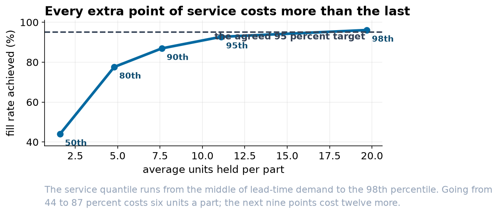

Intermittent Demand Forecasting and Inventory Policy for a Sixty-Part Catalog
Classification, four forecasting methods scored by MASE, and a simulated periodic-review policy evaluated on fill rate and average stock held.
Abstract
Objective. To set order-up-to levels for a 60-part service catalog against a 95 percent fill-rate target, and to establish which forecasting method and which service quantile the result is sensitive to.
Design. Weekly issues over 156 weeks, split 104 for fitting and 52 for evaluation. Parts were classified by the Syntetos-Boylan-Croston scheme using the published cut-offs of 1.32 for average inter-demand interval and 0.49 for the squared coefficient of variation of order size. Four forecasting methods were applied with a smoothing constant of 0.10 throughout. A periodic-review order-up-to policy with a one-week review and a two-week lead time was simulated over the holdout for each method at five service quantiles, with the level taken from the forecast and the spread from the empirical distribution of three-week demand in the fitting window.
Result. 61.0 percent of part-weeks contain no demand, and MAPE is computable on 39.1 percent of the holdout and on no part in full. SBA attained the lowest mean MASE at 0.873, ahead of SES at 0.875 and Croston at 0.888, with the naive forecast at 1.137. A constant forecast of zero, optimal under absolute error for 44 of 59 parts, attains 0.622 and dominates all four. In simulation the four methods span 3.0 points of fill rate at the 0.95 quantile, against 52.1 points spanned by the quantile itself.
1. Data and preprocessing
The extract contained 9,420 rows against an expected 9,360. One week was duplicated, one part number appeared in three spellings, one row recorded a credited customer return as -11 units and one recorded a stock count of 9,999 in the issues column. The two anomalous values were set to zero rather than deleted, since the part-weeks themselves are real and carry no evidence of demand.
One part, P1024, was identified as superseded rather than slow-moving. Measuring elapsed silence in units of each part's own mean inter-demand interval, P1024 stood at 14.0 against a maximum of 3.9 across the remaining catalog, and recorded zero issues across the holdout. It was excluded, leaving 59 parts.
2. Classification
| Class | Parts | Interval | Size variability |
|---|---|---|---|
| Smooth | 6 | below 1.32 | below 0.49 |
| Erratic | 7 | below 1.32 | above 0.49 |
| Intermittent | 21 | above 1.32 | below 0.49 |
| Lumpy | 26 | above 1.32 | above 0.49 |
All four cells are occupied, and the distribution is typical of a service catalog in being dominated by the two high-interval cells. Order size when demand occurs has a median of 3 units, an interquartile range of 1 to 5 and a maximum of 222.
3. Forecast accuracy
| Class | Naive | SES | Croston | SBA |
|---|---|---|---|---|
| Smooth | 0.753 | 0.751 | 0.752 | 0.757 |
| Erratic | 1.140 | 0.848 | 0.842 | 0.823 |
| Intermittent | 0.850 | 0.901 | 0.945 | 0.929 |
| Lumpy | 1.446 | 0.890 | 0.887 | 0.871 |
| All parts | 1.137 | 0.875 | 0.888 | 0.873 |
SBA attains the minimum overall and in the two high-variability classes, which is where the upward bias of the Croston ratio is largest. The Syntetos-Boylan correction is worth 0.015 MASE relative to uncorrected Croston. The naive forecast wins the intermittent class and is the worst method overall, by a margin that would not be visible on the aggregated catalog series.
The separation between the three non-naive methods is 0.015 MASE, which is small enough to warrant asking what the measure is capable of distinguishing. The constant forecast minimizing absolute error on the holdout is zero for 44 of the 59 parts and attains a mean MASE of 0.622, superior to every method evaluated. Absolute error is minimized at the conditional median, and for a series with 61 percent zeros that median is zero. Any ranking on MAE or MASE therefore rewards downward bias, and its optimum is a policy that never replenishes.
4. Inventory policy
A periodic-review order-up-to policy was simulated with review period 1 and lead time 2, giving a protection interval of 3 weeks. For each part the order-up-to level was set as the forecast mean over the protection interval plus a multiple of the standard deviation of three-week demand observed in the fitting window, with the multiple taken as the standardized empirical quantile at the chosen service level.
| Service quantile | Naive | SES | Croston | SBA |
|---|---|---|---|---|
| 0.50 | 37.2% | 45.1% | 46.0% | 44.0% |
| 0.80 | 63.3% | 76.2% | 78.6% | 77.6% |
| 0.90 | 79.4% | 86.7% | 87.3% | 86.9% |
| 0.95 | 89.8% | 92.4% | 92.9% | 92.7% |
| 0.98 | 94.4% | 95.8% | 96.2% | 96.1% |
At the 0.95 quantile the four methods span 3.0 percentage points of fill rate, of which the majority is attributable to the naive forecast. Holding the method fixed, the quantile spans 52.1 points. The ratio of leverage is approximately 17 to 1.

5. Two properties of the service target
The nominal quantile is not the achieved fill rate. Specifying the 0.95 quantile of lead-time demand produced a 92.7 percent fill rate. The quantile governs cycle service, the probability that a replenishment cycle does not stock out, whereas fill rate is unit-weighted and penalizes large shortfalls more than small ones. Where a fill-rate target has been contracted, the quantile must be calibrated by simulation rather than assumed equal to it.
Marginal cost of service is strongly increasing. Moving from 44.0 to 86.9 percent fill requires 6.0 additional units per part, at 0.09 to 0.30 units per point. Moving from 86.9 to 96.1 requires a further 12.1 units, reaching 2.46 units per point over the final stretch, approximately 27 times the initial marginal cost.
6. Limitations
The smoothing constant was fixed at 0.10 for all methods and all parts. Per-part optimization on a rolling origin would be expected to yield a small accuracy improvement and no material change to the service curve, which is governed by the demand distribution rather than by the point forecast.
The dispersion component of the order-up-to level is taken empirically from the fitting window and is therefore stationary by construction. A part whose demand process is changing would receive a stale spread and no diagnostic here would detect it. A parametric alternative, such as a negative binomial or compound Poisson model of lead-time demand, would permit the spread to be forecast rather than assumed.
Fill rate is unit-weighted and order-agnostic. It does not distinguish one order for twenty units from twenty orders for one, and where order completeness matters the target should be specified accordingly.
Parts are treated as independent. Common-cause failure raises the joint requirement above the sum of individual requirements, and substitutability lowers it; neither is represented. At this catalog size the simplification is defensible, and at production scale it is where the remaining gains lie, together with cross-part pooling of the kind global demand models perform.